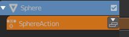
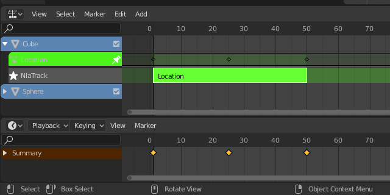
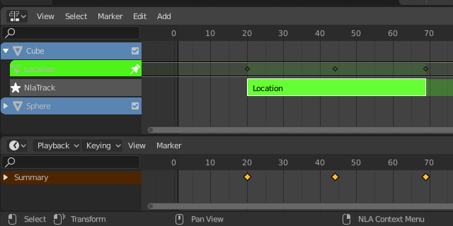
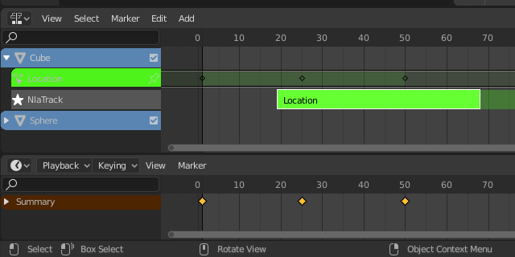

轨道¶
轨道是NLA的分层系统。在最基本上，它可以帮助组织片段。但它也像图像编辑器一样将运动分层 - 底层，首层，最后层。
NLA轨道和片段。
- 孤立化（单放、独奏）轨道（星形图标）
- Toggling Solo Track causes only the selected tracks effects to be visible when animating. This is very useful for debugging complex animations.
- 禁用（扬声器图标）
- Keeps the track from having an effect on the animation. (Mute only applies when Solo is not used.) All strips in that track are shown as being muted (dashed outline).
- 锁定（挂锁图标）
- Prevents changes from being made to this layer. This is useful, for example, if you want to select several strips and move them; but you want to keep a few tracks excluded from the change.
动作轨道¶
默认情况下，动作编辑器会自动存储你通过3D视图创建的关键帧，通过将它们存储到基于正在处理的物体的名称的动作中来。
- Push Down
将活动动作转换为NLA堆栈顶部的新NLA片段。
按下动作按钮。
- 固定（图钉图标）
如果你尝试在 调整模式 下移动片段，你会注意到键（菱形标记）会随之移动。有时候，无论片段在哪里，你都希望按键保持原有的帧。为此，请点击片段旁边的 不固定 图标。
带固定键的NLA片段。
片段移动，注意到键随之移动。
未固定的键返回到其原始帧。
动作存储（隐藏）¶
当创建一个新的动作时，如果现有的动作只有一个用户（即仅仅是当前的参考），它将被“存储”在NLA堆栈中。动作存储用于防止大多数的动作丢失。
The action "stashing" method works by storing otherwise unused/dormant actions in the NLA stack as strips in special muted NLA tracks. This way, the action is linked up to a particular data-block (i.e. to a specific object, or to a specific material/light/etc.) and will be preserved for later use.
删除 & 转换¶
如果你决定不再需要存储（隐藏）动作，只需删除相应的NLA片段，然后保存并重新加载文件。
此外，请注意，由于这些是NLA片段，你可以通过取消禁用（和重命名）它们所在的NLA轨道，将它们重新用作普通的NLA片段。你也可以将其移动到所有其他隐藏动作轨道之上。
删除空白动画数据¶
参考
| 菜单: |
|---|
This operator removes AnimData data-blocks (restricted to only those which are visible in the animation editor where it is run from) which are "empty" (i.e. that is, have no active action, drivers, and NLA tracks or strips).
有时候可能会产生大量的数据块，这些数据块中仍然附有旧的和未使用的动画数据容器。这通常发生在进行运动图形工作时（即，某些链接对象以前可能用于开发一组可重用的资产），并且在NLA编辑器中尤其令人分心。